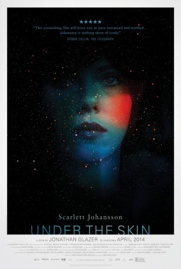

#7560 Under the Skin - Tödliche Verführung
Alternativ: Under the Skin
 
 IMDB-Wertung: 6.3 / 10
IMDB-Wertung: 6.3 / 10  Metascore: 0
Metascore: 0 
An alien entity inhabits the earthly form of a young woman who combs the roads and streets of Scotland in search of the human prey she came to plunder. She seduces her isolated and forsaken male victims into an otherworldly dimension where they are stripped and consumed. However, existence in all its complexity begin to change the alien visitor. She begins to discover herself as human with tragic and terrifying consequences.
Jahr: 2013
Dauer: 108 Minuten
FSK: 12
Land: England Studio: Senator FilmTonspuren: DTS - ,
Untertitel:
Auflösung: 1080p (1920x1040) Größe: 5539 MB
Genre: Thriller, Drama, Sci-Fi
Regisseur: Jonathan Glazer
Drehbuch: Walter Campbell
Soundtrack:
Darsteller:
 Scarlett Johansson als The Female
Scarlett Johansson als The Female- Jeremy McWilliams als The Bad Man
- Lynsey Taylor Mackay als The Dead Woman
- Krystof Hádek als The Swimmer
- Paul Brannigan als Andrew
- Dave Acton als The Logger
 Antonia Campbell-Hughes als Shadow Alien , uncredited
Antonia Campbell-Hughes als Shadow Alien , uncredited- Steve Keys als Motorcyclist #2 , uncredited
- Dougie McConnell als Pick-Up Man
- Kevin McAlinden als First Victim
- D. Meade als Leering Man
- Andrew Gorman als Second Victim
- Joe Szula als Man at Club
- Roy Armstrong als Father at Beach
- Alison Chand als Mother at Beach
- Ben Mills als The Baby
- Oscar Mills als The Baby
- Lee Fanning als Motorcyclist #1
- Marius Bincu als
- Scott Dymond als The Nervous Man
- Stephen Horn als Gang Member #1
- Adam Pearson als The Deformed Man
- May Mewes als Tearoom Waitress
- Michael Moreland als The Quiet Man
- Gerry Goodfellow als The Bus Driver
- Jessica Mance als The Alien
- Jerome Boyle als The Walker , uncredited
- Poppy Alexandra Coe als Nightclub Dancer , uncredited
- Robert J. Goodwin als Tearoom Customer , uncredited
Datei: X:\2013(N-Z)\Under the Skin - Tödliche Verführung (2013, FSK12, 1920x1040).mkv seit 20.11.2017
Festplatte: HD 2013(I-Z)-2014(A-Z)
 Es gibt insgesamt 133 Filme in der Gruppe '2013(N-Z)'
Es gibt insgesamt 133 Filme in der Gruppe '2013(N-Z)'